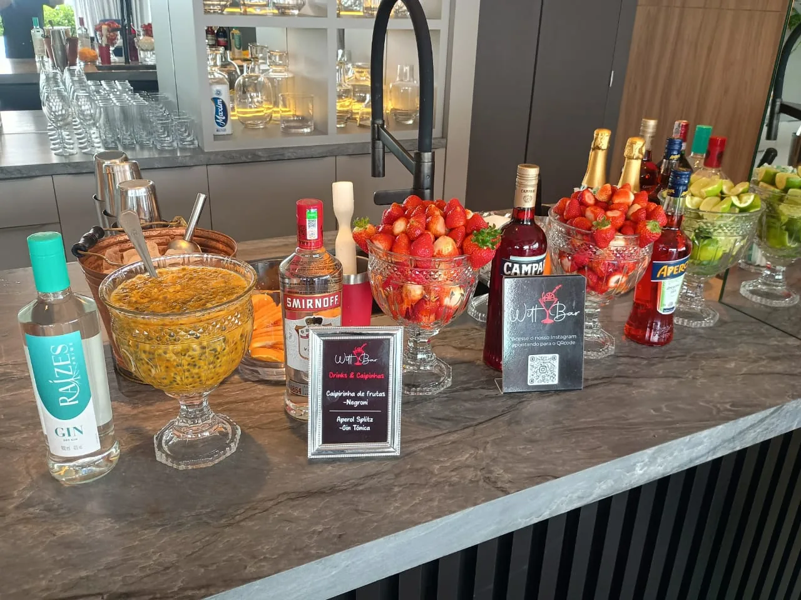

01 / ENTREGAS E ATENDIMENTO
O Witt Bar
no seu endereço.
Quer consultar uma entrega ou saber se o bar pode atender no seu endereço? Informe a cidade e o bairro para conversar com a equipe.

02 / ATENDIMENTO PELO WHATSAPP
Como consultar?
- 01 /
Informe sua região
Envie o nome da cidade e do bairro onde quer receber o pedido ou realizar o evento.
- 02 /
Conte o que você precisa
Diga quais itens procura ou se prefere contratar o bar para o seu evento.
- 03 /
Combine com a equipe
Consulte disponibilidade, valores, prazo e condições diretamente na conversa.
03 / BAR NO LOCAL
Como fica a montagem.
Veja o balcão de drinks montado em espaços diferentes.